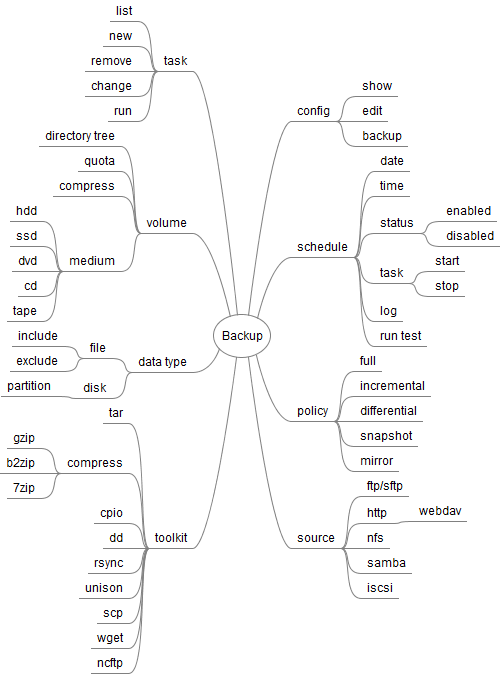

目录
|  |
 |
例 23.1. Backup program
the following is a backup program to implement my ideas in the above diagram. I have not finished yet.
#!/usr/bin/env python3
#/bin/env python3
#-*- coding: utf-8 -*-
##############################################
# Home : http://netkiller.sf.net
# Author: Neo <openunix@163.com>
##############################################
try:
import logging, configparser
import threading
from optparse import OptionParser, OptionGroup
import os,io,sys
except ImportError as err:
print("Error: %s" %(err))
class Runtime(threading.Thread):
def __init__(self, logging):
threading.Thread.__init__(self)
self.logging = logging
sys.stdin = open('stdin.log', 'r')
sys.stdout = open('stdout.log', 'w')
sys.stderr = open('stderr.log', 'w')
def command(self,cmd):
commands = {
'rsync': 'rsync -auzvP',
'sftp' : 'sftp',
'scp' : 'scp -r',
'cp' : 'cp -r'
}
return commands[cmd]
def policy(self,policy):
policies = {
'full': 'rsync -az',
'mirror': 'rsync -auz --delete',
'differential': 'rsync -auz --delete',
'incremental': 'rsync -auz',
'clone': 'dd',
'copy.cp': 'cp -au',
'copy.cp.backup': "cp --suffix=$(date '+.%Y-%m-%d.%H:%M:%S') "
'copy.scp': 'scp -a',
'mirror.ftp': 'wget -m',
'mirror.http': 'wget -m',
'archive.zip': 'zip',
'archive.7zip': '7zip',
'archive.cpio': 'cpio',
'archive.tar': 'tar zcvf',
'snapshot': ''
}
return policies[policy]
def execute(self,cfg):
print( self.policy('mirror'))
#command = self.command(cfg['cmd'])
command = self.policy(cfg['policy']) + ' ' + cfg['source'] + ' ' + cfg['target'] + ' >> stdout.log'
self.logging.debug(command)
os.system(command)
class Task():
def __init__(self, logging):
self.logging = logging
self.config = configparser.SafeConfigParser()
cfg='task.cfg'
self.config.read(cfg)
def list(self):
for section in self.config.sections():
print(section)
def new(self):
pass
def remove(self):
pass
def change(self):
pass
def run(self, section):
try:
#print(cfg)
cfg = self.config.items(section)
r = Runtime(self.logging)
r.execute(dict(cfg))
except configparser.NoSectionError as err:
print(err)
def show(self, section):
for item in self.config.items(section):
#k,v = item
print("%s: %s" %(item))
def get(self,section):
return self.config.items(section)
class Schedule():
def __init__(self, logging):
self.logging = logging
self.config = configparser.SafeConfigParser()
cfg='schedule.cfg'
self.config.read(cfg)
def list(self):
for section in self.config.sections():
print(section)
def show(self, section):
for item in self.config.items(section):
print("%s: %s" %(item))
def new(self):
pass
def remove(self):
pass
def change(self):
system('backup.cron')
def status(self):
pass
def run(self, section):
threads = []
t = Task(self.logging)
#t.run(task)
for task,status in self.config.items(section):
if status :
cfg = t.get(task)
r = Runtime(dict(cfg))
r.setName('Thread-' + task)
threads.append(r)
for t in threads:
#print(t.getName())
self.logging.info(t.getName())
t.start()
t.join()
class Volume():
pass
class Backup():
def __init__(self):
self.config = {}
#self.config['logfile'] = 'backup.log'
usage = "usage: %prog [options] arg1 arg2"
self.parser = OptionParser(usage)
self.parser.add_option("-f", "--file", dest="filename",
help="write report to FILE", metavar="FILE")
self.parser.add_option("-q", "--quiet",
action="store_false", dest="verbose", default=True,
help="don't print status messages to stdout")
self.parser.add_option('','--config', dest="config", help='Read configuration options from file.', default='backup.cfg')
group = OptionGroup(self.parser, "arg1",
"arg1: task | schedule")
self.parser.add_option_group(group)
group = OptionGroup(self.parser, 'arg2', 'arg2: list | new | remove | show')
self.parser.add_option_group(group)
self.parser.add_option('-v','--version',action='store_true', help='print version number')
self.parser.add_option('-d','--daemon', dest='daemon', action='store_true', help='run as daemon')
self.parser.add_option('','--logfile', help='logs file.', default='backup.log')
(options, args) = self.parser.parse_args()
self.configure(options)
try:
logging.basicConfig(level=logging.NOTSET,
format='%(asctime)s %(levelname)-8s %(message)s',
datefmt='%Y-%m-%d %H:%M:%S',
filename=self.config['environment']['logfile'],
filemode='a')
self.logging = logging.getLogger()
except AttributeError as err:
print("Error: %s %s" %(err, self.config['environment']['logfile']))
sys.exit(2)
pass
def configure(self,options):
if options.config:
cpr = configparser.SafeConfigParser()
cpr.read(options.config)
for sect in cpr.sections():
self.config[sect] = dict(cpr.items(sect))
#for (key,value) in cpr.items(sect):
# self.config[key] = value
#print(self.config)
def task(self, args):
try:
t = Task(self.logging)
if len(args) <= 1:
t.list()
elif args[1] == 'list':
t.list()
elif args[1] == 'run':
if len(args) == 3:
t.run(args[2])
else:
t.list()
elif args[1] == 'show':
if len(args) == 3:
t.show(args[2])
else:
t.list()
else:
t.list()
except IOError as err:
print(err)
except configparser.NoSectionError as err:
t.list()
print(err)
self.logging.error(err)
def schedule(self,args):
try:
s = Schedule(self.logging)
if len(args) <= 1:
s.list()
elif args[1] == 'list':
s.list()
elif args[1] == 'show':
if len(args) == 3:
s.show(args[2])
else:
s.list()
elif args[1] == 'run':
if len(args) == 3:
s.run(args[2])
else:
s.list()
else:
s.list()
except configparser.NoSectionError as err:
s.list()
self.logging.error(err)
print(err)
def usage(self):
self.parser.print_help()
def main(self):
(options, args) = self.parser.parse_args()
if options.daemon:
pid = os.fork()
if pid > 0:
self.logging.info('daemon is ok')
sys.exit(0)
if not args:
self.usage()
elif args[0] == 'task':
self.task(args)
self.logging.debug('Task')
elif args[0] == 'schedule':
self.schedule(args)
self.logging.debug('Schedule')
else:
print('')
if __name__ == '__main__':
try:
backup = Backup()
backup.main()
except KeyboardInterrupt:
print ("Crtl+C Pressed. Shutting down.")
list task
$ backup task list www database test test1 test2
show task
$ backup task show www policy: mirror source: /www/www.example.dev/* target: /tmp/www exclude: .svn include: *
run task
$ backup task run www
the backup program has four schedule task, actually you can add more.
$ ./backup schedule list hourly daily weekly monthly $ ./backup schedule show hourly www: True mrtg: True $ ./backup schedule run hourly
crontab -l
17 * * * * test -x /srv/sbin/backup || ( backup schedule run hourly ) 25 6 * * * test -x /srv/sbin/backup || ( backup schedule run daily ) 47 6 * * 7 test -x /srv/sbin/backup || ( backup schedule run weekly ) 52 6 1 * * test -x /srv/sbin/backup || ( backup schedule run monthly ) # m h dom mon dow command */30 * * * * /srv/sbin/backup task run www